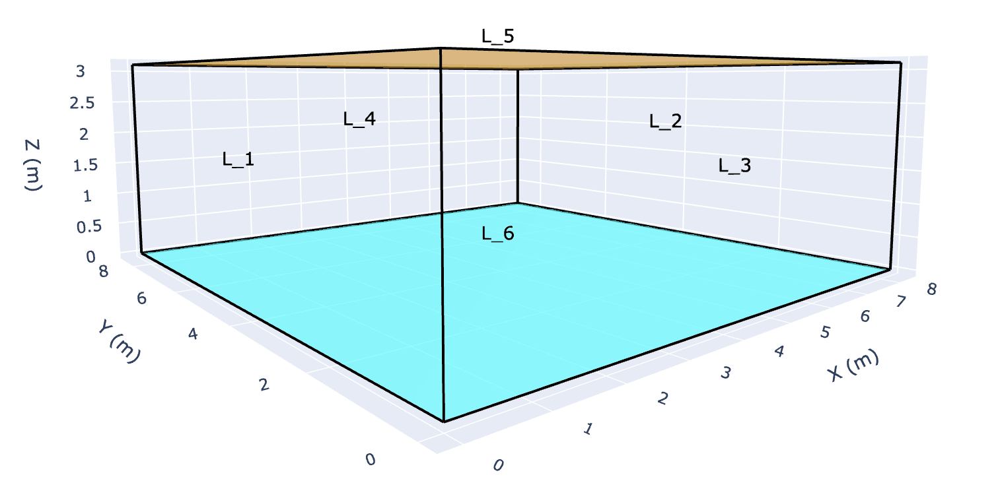
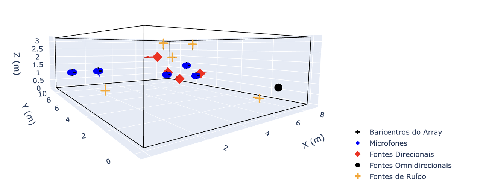
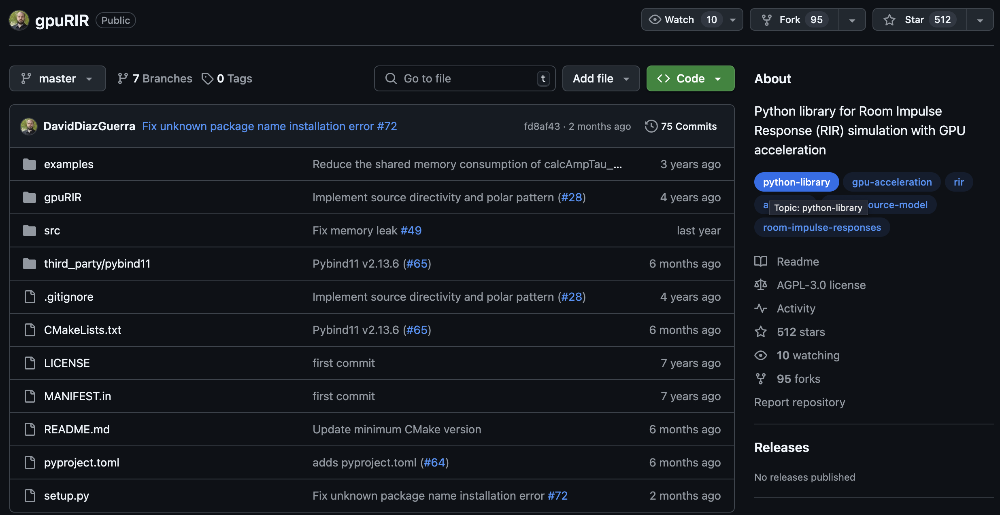
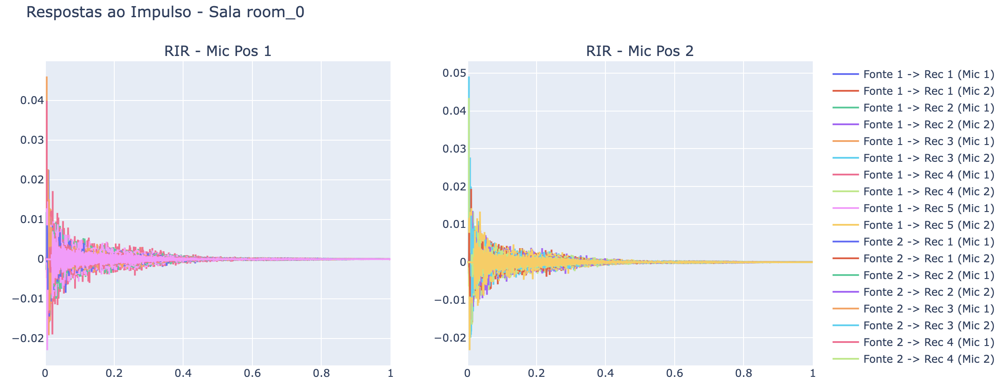

Modelagem Acústica, Processamento de Sinais de Áudio e Processamento de Imagens
Sobre
Olá! Meu nome é Luis Paulo Albuquerque Guedes. Sou aluno de mestrado em Engenharia Elétrica, na área de Processamento de Sinais de Áudio, desenvolvida na COPPE/UFRJ, sob orientação da Professora Mariane Petráglia e do Professor Julio Cesar Boscher Torres.
Inicialmente, este repositório tem como objetivo reunir os registros de progresso da minha dissertação de mestrado.
Meu curriculum vitae encontra-se disponível em:
Dissertação
Confira os detalhes da versão final da dissertação: Acesse aqui.
Bibliografia
Confira a bibliografia utilizada para a dissertação:
Trata-se este repositório dos registros do progresso das simulações acústicas da dissertação de mestrado sobre estimação de parâmetros acústicos usando modelos de Aprendizagem Profunda (Deep Learning).
ALTERAÇÕES IMPLEMENTADAS:
A ETAPA I: CONFIGURAÇÃO DOS AMBIENTES; ETAPA II: GERAÇÃO DE RESPOSTAS AO IMPULSO DE SALAS (RIS); ETAPA III: IMPLEMENTAÇÃO E TREINAMENTO DOS MODELOS; ETAPA III: TESTE DOS MODELOS; ETAPA IV: AVALIAÇÃO DAS MÉTRICAS DOS MODELOS.
ETAPA I: CONFIGURAÇÃO DOS AMBIENTES
PASSO 1: GERANDO AS CONFIGURAÇÕES DA SALA
Inicialmente, as dimensões das salas foram definidas aleatoriamente dentro de um intervalo preestabelecido. O comprimento e a largura variaram entre 3 e 12 metros, enquanto a altura assumiu valores entre 2,5 e 4,5 metros. Esses valores foram arredondados para uma casa decimal para garantir maior precisão nas simulações.
Além das dimensões, foram atribuídos coeficientes de difusão para cada superfície da sala. O mesmo valor foi aplicado uniformemente a todas as superfícies e foi sorteado dentro de um intervalo entre 0,2 e 1. Esse coeficiente foi gerado para seis superfícies distintas: quatro paredes, teto e chão. Os valores foram armazenados de acordo com a frequência correspondente, considerando seis faixas padronizadas: 125 Hz, 250 Hz, 500 Hz, 1000 Hz, 2000 Hz e 4000 Hz.
Para determinar os coeficientes de absorção, com o fim de definir perfis distintos para paredes, teto e chão, foi utilizado um processo probabilístico apresentado em: Em alguns casos, um único valor foi atribuído a todas as superfícies de um mesmo tipo, enquanto em outros, valores diferenciados foram gerados para cada frequência. Esses coeficientes foram estabelecidos a partir de intervalos que variaram conforme o tipo de superfície, refletindo as propriedades acústicas de materiais comuns.
As paredes puderam apresentar coeficientes de absorção homogêneos ou diferenciados por frequência, variando entre valores baixos, típicos de materiais reflexivos, e valores mais elevados, condizentes com superfícies mais absorventes. O teto e o chão seguiram uma lógica semelhante, com intervalos de absorção distintos de acordo com materiais típicos desses elementos estruturais.
Dessa forma, o código gerou automaticamente um conjunto de parâmetros realistas para diferentes configurações de salas, permitindo a simulação de ambientes acústicos diversos com base nas propriedades físicas de suas superfícies.

Visualização 3D de uma amostra de sala simulada
PASSO 2: GERANDO AS CONFIGURAÇÕES DOS RECEPTORES
O código define uma classe chamada 'util_receiver', responsável por gerar e visualizar a disposição de receptores e microfones em um ambiente tridimensional. Primeiramente, são inicializados atributos para armazenar as informações dos receptores. Em seguida, para cada receptor, é gerado um ponto central (baricentro) dentro de um espaço tridimensional,
garantindo que esteja dentro dos limites definidos pela sala. A partir desse baricentro, são calculadas as posições de dois microfones simetricamente distribuídos ao longo do eixo X, garantindo um espaçamento fixo entre eles. Um vetor de direção perpendicular ao eixo que une os microfones é então gerado, permitindo que a orientação do receptor varie
dentro do plano XY. Após a geração dos receptores, microfones e vetores direcionais, um gráfico tridimensional interativo é construído utilizando a biblioteca Plotly. O layout do gráfico é configurado para exibir os eixos e uma legenda, proporcionando uma visualização clara da distribuição dos elementos no espaço tridimensional.
PASSO 3: GERANDO AS CONFIGURAÇÕES DAS FONTES DE FALA
O código define uma classe chamada 'util_source', responsável por gerar e posicionar fontes de som dentro de um ambiente tridimensional. Inicialmente, são listados diferentes tipos de fontes sonoras, como omnidirecional, cardioide e bidirecional. Para criar fontes reais na sala, são geradas coordenadas aleatórias garantindo uma distância mínima segura em relação a um ponto de referência (baricentro).
A primeira fonte sempre será omnidirecional, enquanto as demais são atribuídas aleatoriamente a uma das categorias disponíveis. Além disso, cada fonte recebe um vetor de direção, que pode ser perpendicular ao plano horizontal ou gerado aleatoriamente.
No caso das fontes de ruído, são definidos até cinco pontos estratégicos, incluindo posições fixas no centro superior da sala e ao longo das extremidades, enquanto fontes adicionais são posicionadas aleatoriamente dentro dos limites da sala. As direções dessas fontes de ruído podem ser fixas (por exemplo, apontando para baixo no eixo Z) ou geradas aleatoriamente. Cada fonte recebe um ângulo de orientação (yaw) aleatório dentro de um intervalo de -180 a 180 graus para garantir diversidade na orientação espacial.
Para evitar sobreposições ou posicionamentos inadequados, são utilizadas verificações de distância mínima entre as fontes e seus respectivos baricentros. Além disso, vetores perpendiculares são calculados para manter coerência na orientação das fontes, garantindo que suas direções estejam bem distribuídas dentro do espaço tridimensional da sala.
PASSO 4: GERANDO AS CONFIGURAÇÕES DAS FONTES DE RUÍDO
O código gera e visualiza fontes de ruído dentro de uma sala tridimensional simulada, associando cada fonte a um arquivo de som específico e a uma área de atuação realista. A classe util_source posiciona estrategicamente os ruídos no ambiente, garantindo que sua distribuição reflita situações reais. Cada ruído possui um intervalo de posicionamento definido no código, assegurando coerência espacial com sua fonte original.
Os ruídos utilizados incluem ar-condicionado, tosse, risada, telefone tocando e digitação no teclado, extraídos do conjunto DCASE 2016 Task 2, disponíveis em: O ar-condicionado é posicionado no teto, simulando um sistema de ventilação. A tosse ocorre em altura média, representando uma pessoa no ambiente.
A risada é colocada próxima às laterais, indicando conversas em grupo. O telefone aparece próximo às extremidades da sala, em uma mesa ou estação de trabalho. Já a digitação é posicionada próxima ao chão, simulando teclados sobre superfícies.
A biblioteca Plotly é usada para gerar um gráfico 3D interativo, onde cada fonte de ruído é representada por um marcador vermelho e vetores direcionais azuis indicam a propagação do som. Além disso, as informações sobre posição, direção e arquivo de som correspondente são organizadas em uma tabela formatada com a biblioteca tabulate.
Essa abordagem garante que a simulação seja realista e contextualizada, permitindo estudos avançados sobre propagação acústica, interferência sonora e inteligibilidade da fala em ambientes fechados.

Visualização 3D de uma amostra de sala simulada com microfones, fontes de fala e de ruído
PASSO 5: COMPILANDO AS INFORMAÇÕES
O código define uma classe chamada conf_files, responsável por gerar configurações de salas para simulações acústicas. Ao ser inicializada, a classe recebe o número de salas a serem geradas e o nome do conjunto de dados. Em seguida, são instanciadas as classes auxiliares responsáveis pela definição dos receptores, fontes sonoras e propriedades da sala. Um diretório de armazenamento é criado para salvar os arquivos de configuração.
Inicialmente, são gerados os parâmetros globais da simulação, incluindo a taxa de amostragem, a duração da resposta ao impulso, a ordem de reflexão e a quantidade de raios para o traçado estocástico. Esses parâmetros são armazenados em arquivos nos formatos YAML e JSON. Na etapa de criação das salas, um dicionário é estruturado para armazenar informações sobre as dimensões da sala, coeficientes de absorção e difusão, além das condições ambientais,
como umidade e temperatura. Para cada sala, são geradas posições de receptores e suas respectivas direções, assegurando um espaçamento adequado. Fontes sonoras também são distribuídas dentro do ambiente, garantindo que pelo menos uma delas seja omnidirecional. Além disso, fontes de ruído são posicionadas em locais específicos, como próximos ao teto, lateralmente e perto do chão, simulando diferentes condições acústicas.
Ao final do processo, os dados estruturados são armazenados em arquivos YAML e JSON, organizando as informações de cada sala, incluindo os parâmetros de simulação, receptores, fontes sonoras e fontes de ruído. O progresso da geração das salas é monitorado com uma barra de progresso para indicar a conclusão das iterações.
PASSO 6: GERANDO E ARMAZENADOS AS SALAS
O código cria 1000 salas e salva suas configurações nos formatos YAML e JSON. Para cada sala, são geradas dimensões, receptores, fontes sonoras (incluindo uma omnidirecional) e fontes de ruído posicionadas estrategicamente. Os dados são armazenados em arquivos organizados, e o progresso é exibido com tqdm.
ETAPA II: GERAÇÃO DE RESPOSTAS AO IMPULSO DE SALAS (RIS)
A segunda etapa teve como objetivo a implementação da biblioteca gpuRIR, uma ferramenta de código aberto em Python para a simulação de Respostas ao Impulso de Salas (RIRs). Essa biblioteca utiliza o Image Source Method (ISM) com aceleração via GPU,
permitindo o cálculo eficiente de RIRs entre múltiplas fontes e receptores em paralelo por meio de GPUs CUDA. Comparada às implementações tradicionais baseadas em CPU, a gpuRIR oferece um desempenho significativamente superior, sendo aproximadamente 100 vezes mais rápida. A biblioteca gpuRIR está disponível em:
O artigo que aborda a biblioteca gpuRIR pode ser encontrado em:

Biblioteca gpuRIR
A biblioteca gpuRIR gera RIRs para diferentes configurações acústicas utilizando a biblioteca gpuRIR. Primeiramente, ele carrega os dados das salas, fontes sonoras e receptores a partir de arquivos Parquet. Com base nas dimensões da sala, coeficientes de absorção e parâmetros acústicos como T60, C50 e DRR, o código calcula os coeficientes de reflexão das superfícies e determina a ordem de imagem necessária para a simulação. Em seguida, para cada frequência especificada (125, 250, 500, 1000, 2000 e 4000 Hz), são geradas RIRs para todas as fontes sonoras,
levando em consideração o padrão direcional das fontes e microfones. As RIRs são simuladas separadamente para dois conjuntos de microfones e, ao final do processamento, os resultados são armazenados em arquivos Parquet organizados por frequência. O código também exibe o número de fontes e receptores presentes na sala selecionada antes de finalizar a execução.

RIRs geradas para fontes de fala
RIRs geradas para fontes de ruído
Com o objetivo final de desenvolver uma abordagem para a estimativa cega de parâmetros acústicos, este estágio inicial, de natureza experimental e exploratória, consistiu em implementar um modelo RESNET-50 para estimar as seguintes variáveis:
Área Superficial (m²)
Volume (m³)
Superfície 1 (m²)
Superfície 2 (m²)
Superfície 3 (m²)
Superfície 4 (m²)
Superfície 5 (m²)
Superfície 6 (m²)
Absorção Média (125 Hz)
Absorção Média (250 Hz)
Absorção Média (500 Hz)
Absorção Média (1000 Hz)
Absorção Média (2000 Hz)
Absorção Média (4000 Hz)
T60_Sabine_125
T60_Sabine_250
T60_Sabine_500
T60_Sabine_1000
T60_Sabine_2000
T60_Sabine_4000
C50_125Hz
T60_T30_125Hz
C50_250Hz
T60_T30_250Hz
C50_500Hz
T60_T30_500Hz
C50_1000Hz
T60_T30_1000Hz
C50_2000Hz
T60_T30_2000Hz
C50_4000Hz
T60_T30_4000Hz
O resultado preliminar encontra-se no seguinte link: Resultados.
O modelo treinado encontra-se no seguinte link: Modelo Treinado.
Características do Modelo
Base: ResNet-50 pré-treinada (ImageNet).
Camadas finais removidas (mantendo apenas a extração de características).
Camadas adicionais:
Global Average Pooling (reduzindo a saída para 2048 neurônios).
Uma cabeça para predição dos valores esperados (mu_head).
Uma cabeça para predição da incerteza (sigma_head), ativada com Softplus.
Função de Perda - Log-Verossimilhança Gaussiana
O modelo utiliza uma função de perda baseada em distribuição Gaussiana para estimar a incerteza da predição. A equação utilizada é:
L = 0.5 * Σ (log(σ²) + ((y - μ)² / σ²))
Essa abordagem permite que o modelo aprenda não apenas os valores das variáveis acústicas, mas também o nível de incerteza associado às predições.
Hiperparâmetros do Treinamento
Épocas: 50
Otimizador: Adam (lr=1e-5)
Divisão dos Dados: 80% Treino, 20% Validação
Checkpoint: Salvo a cada época
GPU utilizada: NVIDIA T4
Treinamento e Validação
Durante o treinamento, o modelo foi avaliado em cada época utilizando a função de perda de log-verossimilhança Gaussiana. O progresso do treinamento e validação foi registrado, gerando um gráfico de perdas ao longo das épocas.
Acurácia no treino: X%
Erro de treino: Y
Erro de validação: Z
Acurácia no teste: W%
Erro no teste: V
Visualização das Perdas
O gráfico abaixo mostra a evolução da perda durante o treinamento:
A ETAPA I: CONFIGURAÇÃO DOS AMBIENTES; ETAPA II: IMPLEMENTAÇÃO E TREINAMENTO DOS MODELOS; ETAPA III: TESTE DOS MODELOS; ETAPA IV: AVALIAÇÃO DAS MÉTRICAS DOS MODELOS.
ETAPA I: CONFIGURAÇÃO DOS AMBIENTES
PASSO 1: GERANDO AS CONFIGURAÇÕES DA SALA
Inicialmente, as dimensões das salas foram definidas aleatoriamente dentro de um intervalo preestabelecido. O comprimento e a largura variaram entre 3 e 12 metros, enquanto a altura assumiu valores entre 2,5 e 4,5 metros. Esses valores foram arredondados para uma casa decimal para garantir maior precisão nas simulações.
Além das dimensões, foram atribuídos coeficientes de difusão para cada superfície da sala. O mesmo valor foi aplicado uniformemente a todas as superfícies e foi sorteado dentro de um intervalo entre 0,2 e 1. Esse coeficiente foi gerado para seis superfícies distintas: quatro paredes, teto e chão. Os valores foram armazenados de acordo com a frequência correspondente, considerando seis faixas padronizadas: 125 Hz, 250 Hz, 500 Hz, 1000 Hz, 2000 Hz e 4000 Hz.
Para determinar os coeficientes de absorção, com o fim de definir perfis distintos para paredes, teto e chão, foi utilizado um processo probabilístico apresentado em Em alguns casos, um único valor foi atribuído a todas as superfícies de um mesmo tipo, enquanto em outros, valores diferenciados foram gerados para cada frequência. Esses coeficientes foram estabelecidos a partir de intervalos que variaram conforme o tipo de superfície, refletindo as propriedades acústicas de materiais comuns.
As paredes puderam apresentar coeficientes de absorção homogêneos ou diferenciados por frequência, variando entre valores baixos, típicos de materiais reflexivos, e valores mais elevados, condizentes com superfícies mais absorventes. O teto e o chão seguiram uma lógica semelhante, com intervalos de absorção distintos de acordo com materiais típicos desses elementos estruturais.
Dessa forma, o código gerou automaticamente um conjunto de parâmetros realistas para diferentes configurações de salas, permitindo a simulação de ambientes acústicos diversos com base nas propriedades físicas de suas superfícies.
PASSO 2: GERANDO AS CONFIGURAÇÕES DOS RECEPTORES
A classe 'util_receiver' é responsável por definir e gerar arranjos de microfones em um ambiente tridimensional. Inicialmente, ela armazena os receptores em um dicionário ('dic_receiver'). O método 'mic_defination_array' calcula as posições de dois microfones a partir de um ponto central (barycenter), aplicando uma matriz de rotação para posicioná-los a uma distância fixa de 22.5 cm. O método generate_receivers_rooms distribui aleatoriamente um conjunto de receptores dentro de uma sala, garantindo uma distância mínima das paredes, além de gerar ângulos aleatórios de orientação (yaw, pitch e roll). Ele utiliza o método 'rotation_matrix', que constrói uma matriz de rotação tridimensional com base nesses ângulos,
permitindo a correta orientação dos microfones no espaço. Os resultados incluem as posições dos microfones, os barycenters e os ângulos de rotação, tornando essa classe útil para simulações acústicas e análise de propagação sonora.
PASSO 3: GERANDO AS CONFIGURAÇÕES DAS FONTES
A classe 'util_source' é responsável por gerar fontes sonoras dentro de uma sala tridimensional, garantindo posições seguras e evitando sobreposição com o barycenter. Ela contém uma lista de descrições de padrões de captação de microfones, incluindo opções como omnidirecional, cardióide e bidirecional. O método 'generate_source_room' cria fontes reais na sala, garantindo que pelo menos uma delas seja omnidirecional
e posicionando as demais aleatoriamente com diferentes orientações (yaw, pitch e roll). O método 'fake_source_room' realiza um processo semelhante para fontes artificiais, garantindo uma distância mínima entre elas e o barycenter. Ambos os métodos utilizam 'generate_safe_coordinates', que assegura que as fontes estejam dentro dos limites da sala e respeitem uma distância mínima do barycenter antes de serem posicionadas.
Essa abordagem permite a simulação de fontes sonoras em diferentes condições espaciais para análise acústica.
PASSO 4: COMPILANDO AS INFORMAÇÕES
A classe 'conf_files' combina funcionalidades das classes 'util_room', 'util_receiver' e 'util_source' para gerar arquivos de configuração que descrevem salas acústicas, receptores (microfones) e fontes sonoras. No método '__init__', ela recebe o número de salas e o nome do conjunto de dados, inicializando instâncias auxiliares e chamando os métodos 'params_file()' e 'room_file()'. O método 'params_file()' gera um arquivo YAML
contendo os parâmetros da simulação, como taxa de amostragem (48 kHz), ordem de reflexão, e número de raios para o modelo de traçado de raios difuso. O método 'room_file()' cria dicionários com as propriedades de cada sala, incluindo dimensões, coeficientes de absorção e difusão, além da distribuição de receptores e fontes sonoras. Para cada sala, ele posiciona cinco receptores garantindo uma distância mínima das paredes, gera fontes reais e artificiais,
e armazena as configurações em arquivos YAML separados para salas, receptores, fontes e fontes artificiais de ruído. A abordagem facilita a simulação e análise acústica automatizada.
PASSO 5: GERANDO E ARMAZENADOS AS SALAS
A chamada 'conf_files(1000, "test")' cria e configura automaticamente 1000 salas acústicas para simulação, gerando arquivos YAML detalhados com parâmetros da sala, receptores e fontes sonoras. Durante a execução, a classe define dimensões aleatórias para cada sala, calcula coeficientes de absorção e difusão, posiciona cinco receptores respeitando uma distância mínima das paredes e distribui fontes sonoras reais e artificiais, garantindo ao menos uma omnidirecional.
Os dados são organizados em arquivos YAML, incluindo conf_sim_params.yml para parâmetros da simulação, conf_room_setup_2.yml com detalhes das salas, conf_receivers_2.yml para microfones, conf_source_2.yml para fontes reais e conf_noise_source_2.yml para fontes artificiais, permitindo sua aplicação em estudos de propagação sonora e modelagem acústica.
API para Estimação
Esta API fornece funcionalidades avançadas para estimar parâmetros acústicos e realizar processamento de sinais.
Unreal Engine 5 Simulations of Solar Plant Inspections by Unmanned Aerial Systems with Robot Operating System 2
Autores: Fabio Andrade, Agnar Sivertsen, Marcos G L Moura, Lucas Cavalcante Clarino, Gabriel Souza Machado Gonzaléz, Luis Paulo Albuquerque Guedes, Carlos Alberto Correia, Mariane Petraglia, Alessandro Rosa Lopes Zachi
Resumo: Este artigo apresenta um sistema de simulação de alta fidelidade para inspeção de usinas solares utilizando Sistemas Aéreos Não Tripulados. Ele integra o Unreal Engine 5 para visuais realistas, o AirSim para simulação da física e sensores de drones e o Robot Operating System 2 para desenvolvimento de algoritmos. O sistema permite testar algoritmos de inspeção em um ambiente virtual realista, aprimorando o desenvolvimento de soluções de visão computacional e detecção de objetos. Um estudo de caso utilizando a Unidade de Controle de Voo ArduPilot, Detecção de Bordas de Canny e controle PID demonstra sua eficácia.
Radio Frequency-Audio Based Drone Classification using Deep Learning Methods
Autores: Luis Paulo Albuquerque Guedes, Mariane Petraglia, Rêmulo M. Caminha Gomes
Resumo: Este artigo propõe um modelo de aprendizado profundo que utiliza a fusão de dados de sensores acústicos e de radiofrequência (RF) para a classificação de Veículos Aéreos Não Tripulados (UAVs). O modelo visa aumentar a precisão na classificação de diferentes tipos de drones, garantindo redundância para evitar falhas. O trabalho foi estruturado em três etapas: análise acústica para classificação de tipos de drones (etapa 1), classificação baseada em assinaturas de RF (etapa 2) e integração dos sensores (etapa 3). A combinação de sensores acústicos e de RF resultou em uma melhoria significativa no desempenho da classificação de drones, aumentando a precisão de 0.8342 para 0.8617. Além disso, o uso dessa fusão de dados melhorou a precisão em até 15,3% em faixas de SNR mais baixas.
An Integrated Framework for UAV Sound Tracking and Classification Using Deep Learning Techniques and Kalman Filters
Autores: Luis Paulo Albuquerque Guedes, Mariane Petraglia, Pedro Henrique Monteiro Guedes
Resumo: Este artigo apresenta um framework integrado que combina classificação acústica e rastreamento de trajetória de Veículos Aéreos Não Tripulados (UAVs) utilizando técnicas de aprendizado profundo e filtros de Kalman. A abordagem proposta visa melhorar a precisão na identificação do tipo de UAV e na predição de trajetória, com base em dados acústicos passivos reais registrados em uma câmara anecoica e convolvidos com ruído ambiental. Os resultados das simulações confirmaram a eficácia do sistema tanto nas tarefas de classificação quanto na estimativa de trajetória. Para a classificação do tipo de UAV, o F1-score geral atingiu 0.8342, com o Drone C obtendo o melhor desempenho (0.8504). Para a classificação da direção de manobra, os Drones A e B alcançaram um F1-score de 0.8277, enquanto o Drone C obteve 0.8298. O erro médio de distância na estimativa de trajetória foi de aproximadamente 8 metros, com desvios padrão variando de 3.34 a 3.55 metros, demonstrando consistência e precisão em todas as dimensões avaliadas.